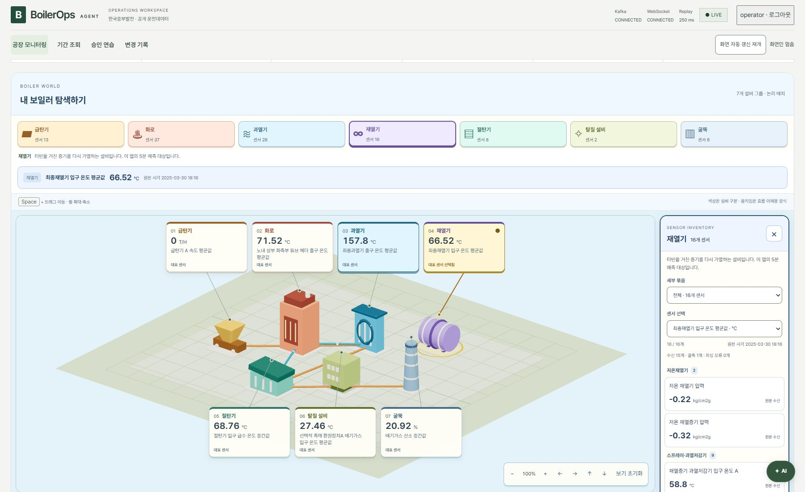

README.md
BoilerOps Agent
보일러의 과거 운전 기록을 공장 그림과 그래프로 살펴보는 앱입니다. 센서를 찾아 AI에 질문하고, 재열기의 5분 뒤 온도도 확인할 수 있습니다.
승인 연습은 별도의 연습용 숫자만 바꿉니다. 실제 발전설비는 제어하지 않습니다.
화면 미리보기

이전 검증 버전의 화면입니다. 현재 앱은 짙은 푸른색을 사용합니다.
- 공장 모니터링: 설비별 센서 값과 최근 2분 변화를 확인합니다.
- 기간 조회: 여러 센서의 원하는 기간을 그래프로 비교합니다.
- AI 질문: 값과 변화에 대해 원본 근거와 함께 답변받습니다.
- 5분 예측: 재열기의 예상 온도와 시험 오차를 확인합니다.
- 승인 연습: 연습용 변경안을 승인·거절하고 결과를 확인합니다.
사용 안내 영상 (새 탭) · 기능과 코드 살펴보기 (새 탭)
실행은 이렇게 하세요
Windows PowerShell 기준입니다.
1. 준비
- Node.js 22.12 이상, Python 3.13, uv, Docker Desktop, Ollama를 설치합니다. 설치 확인 방법
- 원본 CSV를
data/raw/에 넣습니다. 데이터는 저장소에 포함되어 있지 않습니다. 기존.env가 있다면 그 파일에 지정된 경로를 사용합니다. - Docker Desktop을 켜고 엔진이 준비될 때까지 기다립니다.
2. 실행
이 README가 있는 프로젝트 폴더에서 실행합니다.
npm start브라우저가 자동으로 열립니다. 열리지 않으면 http://127.0.0.1:5173 (새 탭)으로 접속하세요.
첫 실행은 설치와 모델 준비에 시간이 걸립니다. 기본 AI 모델이 없으면 약 4.7GB를 다운로드합니다.
3. 로그인과 종료
| 항목 | 입력할 값 |
|---|---|
| 사용자 ID | operator |
| 개인 접근 키 | 키 발급 시 터미널에 표시된 Access key: 뒤의 값 |
키는 발급하거나 재발급할 때만 표시됩니다. 보관한 키로 로그인하고, 모르면 아래 방법으로 새로 발급하세요.
종료하려면 실행한 PowerShell 창에서 Enter를 누릅니다. 다음에 사용할 때도 npm start로 실행합니다.
키를 모르거나 실행이 안 될 때
키를 잊었다면 실행 중인 앱을 Enter로 종료한 뒤 같은 폴더에서 실행합니다.
npm run start:reset-keyoperator의 새 키를 발급하고 앱을 다시 시작합니다. 터미널의 Access key: 뒤에 나온 값을 복사해 로그인하세요. 이전 키는 사용할 수 없으며 새 키는 안전하게 보관합니다.
기존 조회·승인 기록과 다른 사용자·Kafka 설정은 유지됩니다. .env.security를 삭제하지 마세요.
그 밖의 오류는 문제 해결 안내를 확인하세요. 터미널에 실패 단계와 로그 위치가 표시됩니다. 설정 파일이나 키 원문은 공유하지 마세요.
사용 전에 알아둘 점
- 과거 데이터입니다. 2025년 3~4월 기록을 재생합니다. 0·음수·빈 값은 원본대로 표시하며, 그림의 위치는 실제 센서 설치 좌표가 아닙니다.
- AI 질문은 각각 별도로 조회합니다. 지난 대화는 화면에 남지만 모델이 기억하는 기능은 아닙니다. 새로고침하거나 로그아웃하면 대화와 작성 중인 글이 초기화됩니다.
- 예측은 참고용입니다. 현재 모델은 시험에서 현재 온도를 유지하는 단순 예측보다 오차가 컸습니다. 실제 운전 판단에 사용할 수 없습니다.
- 코드 수정은 재실행해야 반영됩니다. 저장 즉시 반영하는 개발 서버는 수동 개발 안내를 참고하세요.
더 알아보기
| 궁금한 내용 | 문서 |
|---|---|
| 화면 조작·개발 실행·문제 해결 | 자세한 사용법 |
| 기능 흐름과 코드 구조 | 그림으로 보는 프로젝트 지도 (새 탭) |
| 설계와 데이터 기준 | 프로젝트 계획 · 화면 설계 |
| 실제 검증 결과와 남은 한계 | 화면·데이터 검증 · 안정성 보완 · 시스템 설계 |
| 개발 작업 규칙 | 코딩 기준 · 작업 진입점 |